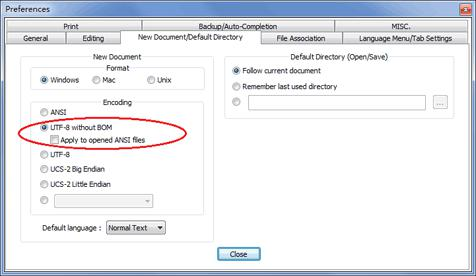

创建版本库
什么是版本库呢？版本库又名仓库，英文名repository，你可以简单理解成一个目录，这个目录里面的所有文件都可以被Git管理起来，每个文件的修改、删除，Git都能跟踪，以便任何时刻都可以追踪历史，或者在将来某个时刻可以“还原”。
所以，创建一个版本库非常简单，首先，选择一个合适的地方，创建一个空目录：
$ mkdir learngit
$ cd learngit
$ pwd
/Users/michael/learngit
pwd命令用于显示当前目录。在我的Mac上，这个仓库位于/Users/michael/learngit。
如果你使用Windows系统，为了避免遇到各种莫名其妙的问题，请确保目录名（包括父目录）不包含中文。
第二步，通过git init命令把这个目录变成Git可以管理的仓库：
$ git init
Initialized empty Git repository in /Users/michael/learngit/.git/
瞬间Git就把仓库建好了，而且告诉你是一个空的仓库（empty Git repository），细心的读者可以发现当前目录下多了一个.git的目录，这个目录是Git来跟踪管理版本库的，没事千万不要手动修改这个目录里面的文件，不然改乱了，就把Git仓库给破坏了。
如果你没有看到.git目录，那是因为这个目录默认是隐藏的，用ls -ah命令就可以看见。
也不一定必须在空目录下创建Git仓库，选择一个已经有东西的目录也是可以的。不过，不建议你使用自己正在开发的公司项目来学习Git，否则造成的一切后果概不负责。
把文件添加到版本库
首先这里再明确一下，所有的版本控制系统，其实只能跟踪文本文件的改动，比如TXT文件，网页，所有的程序代码等等，Git也不例外。版本控制系统可以告诉你每次的改动，比如在第5行加了一个单词“Linux”，在第8行删了一个单词“Windows”。而图片、视频这些二进制文件，虽然也能由版本控制系统管理，但没法跟踪文件的变化，只能把二进制文件每次改动串起来，也就是只知道图片从100KB改成了120KB，但到底改了啥，版本控制系统不知道，也没法知道。
不幸的是，Microsoft的Word格式是二进制格式，因此，版本控制系统是没法跟踪Word文件的改动的，前面我们举的例子只是为了演示，如果要真正使用版本控制系统，就要以纯文本方式编写文件。
因为文本是有编码的，比如中文有常用的GBK编码，日文有Shift_JIS编码，如果没有历史遗留问题，强烈建议使用标准的UTF-8编码，所有语言使用同一种编码，既没有冲突，又被所有平台所支持。
使用Windows的童鞋要特别注意：
千万不要使用Windows自带的记事本编辑任何文本文件。原因是Microsoft开发记事本的团队使用了一个非常弱智的行为来保存UTF-8编码的文件，他们自作聪明地在每个文件开头添加了0xefbbbf（十六进制）的字符，你会遇到很多不可思议的问题，比如，网页第一行可能会显示一个“?”，明明正确的程序一编译就报语法错误，等等，都是由记事本的弱智行为带来的。建议你下载Notepad++代替记事本，不但功能强大，而且免费！记得把Notepad++的默认编码设置为UTF-8 without BOM即可：

言归正传，现在我们编写一个readme.txt文件，内容如下：
Git is a version control system.
Git is free software.
一定要放到learngit目录下（子目录也行），因为这是一个Git仓库，放到其他地方Git再厉害也找不到这个文件。
和把大象放到冰箱需要3步相比，把一个文件放到Git仓库只需要两步。
第一步，用命令git add告诉Git，把文件添加到仓库：
$ git add readme.txt
执行上面的命令，没有任何显示，这就对了，Unix的哲学是“没有消息就是好消息”，说明添加成功。
第二步，用命令git commit告诉Git，把文件提交到仓库：
$ git commit -m "wrote a readme file"
[master (root-commit) cb926e7] wrote a readme file
1 file changed, 2 insertions(+)
create mode 100644 readme.txt
简单解释一下git commit命令，-m后面输入的是本次提交的说明，可以输入任意内容，当然最好是有意义的，这样你就能从历史记录里方便地找到改动记录。
嫌麻烦不想输入-m "xxx"行不行？确实有办法可以这么干，但是强烈不建议你这么干，因为输入说明对自己对别人阅读都很重要。实在不想输入说明的童鞋请自行Google，我不告诉你这个参数。
git commit命令执行成功后会告诉你，1个文件被改动（我们新添加的readme.txt文件），插入了两行内容（readme.txt有两行内容）。
为什么Git添加文件需要add，commit一共两步呢？因为commit可以一次提交很多文件，所以你可以多次add不同的文件，比如：
$ git add file1.txt
$ git add file2.txt file3.txt
$ git commit -m "add 3 files."
小结
现在总结一下今天学的两点内容：
初始化一个Git仓库，使用git init命令。
添加文件到Git仓库，分两步：
第一步，使用命令
git add <file>，注意，可反复多次使用，添加多个文件；第二步，使用命令
git commit，完成。